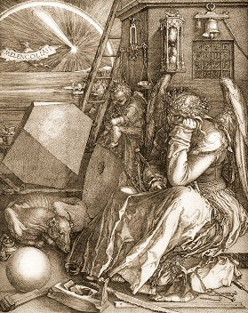

Listen to 'Alchemy' in English

XXIV ALCHIMIE
Un loup noir hurlera quand volera le cygne.
Un poids d'ombre à sa nuit attire mon témoin.
Mon sépulcre au plus saint! Ma couronne au plus digne!
Plus bas est mon soleil et plus ma forme, loin...
Les dés n'ont pas roulé de la paume des sages.
Le joueur sans vergogne a parié mes jours.
Le rêve d'un destin a été mon partage.
Il n'est plus long bonheur que les fausses amours.
Le gibet retourné peut-il singer la sainte?
L'étoile qui m'ailait crible mon ciel de plombs.
Les contes des vieux temps élèvent leur enceinte.
L'instant n'a plus de terme et le temps de jalons.
C'est l'heure de la pie et de la souris chauve.
Les astres arrêtés repartent à rebours.
Les sèves vers le pied descendent et se lovent
Pour des ans écoulés renouveler le cours.
Voici l'heure venue où le corbeau s'éclaire.
Le roi presse la reine et l'oeuvre s'accomplit.
La porte va céder qui conduit au mystère
Et rayonne soudain le destin qui l'élit.
Les coqs brisent l'aurore, et craque l'espérance.
D'un monde anéanti surgit l'envol du temps.
Un dieu rêvant d'un dieu connut sa délivrance.
Eve au jardin vagit sur ses secrets latents.
Aux landes de l'esprit fleurit la majolique,
Mais le savant en vain déchiffrerait ses mots.
Le songe du rêveur est plus sure relique
Où le savoir du monde est à jamais enclos.
Michel Galiana (c) 1991
XXIV ALCHEMY
Hark! A black wolf will howl at the swan taking flight.
Heavy shades extend on my witness as they grow.
To the holiest my grave! To the worthiest my right!
The lower my sunset, the longer my shadow...
No, the dice by no means were cast by a wise palm:
On my days the shameless gambler laid a wager.
Twas in a dream of fate that my life was embalmed:
Nothing like fake love to make bliss last forever!
May the upset gallows mimic the holy wife?
The star that winged my heels riddles my sky with shots.
The tales of times gone by raise ramparts for a strife.
Instant becomes endless and time a waste land plot.
The hour for the magpie and for the bat has rung.
The stars have stopped their run. They start the other way.
Saps flow back to the roots, trees with strange wreaths are hung,
Preparing to repeat the course of bygone days.
Time has come for the crow its plumage to lighten.
For the king to rush to the queen -the work be wrought!-
To open the gate that leads to the Arcanum.
May a glorious fate befall the one it sought!
Crowing cocks break the dawn and they cause hope to hatch
Out of a scattered world, out of new soaring times.
A god who dreamt of an other god surged to watch
How in Eden, newborn Eve recites secret rhymes.
On the heathers of mind fake flowers do abound,
But a scholar would waste his time to read their words.
A dreamer's reverie is a shrine, far more sound.
Never shall the knowledge of the world there be stirred.
Transl. Christian Souchon 01.01.2004 (c) (r) All rights reserved
"Loup noir, cygne, témoin, sépulcre, couronne, gibet retourné, sainte, pie, chauve-souris, roi, reine..." un vocabulaire qui semble appartenir à quelque science ésotérique comme l'alchimie ou l'astrologie...
Rarement Michel se plaint de son destin. C'est pourtant ce qu'il fait à la strophe 2.
"Black wolf, swan, witness, grave, crown, upset gallows, holy woman, magpie, bat, king,
queen..." seem to refer to some esoteric science like alchemy or astrology...
Michel rarely complains about his destiny. Yet this is what he does in stanza 2.
Listen to 'Alchemy' in English